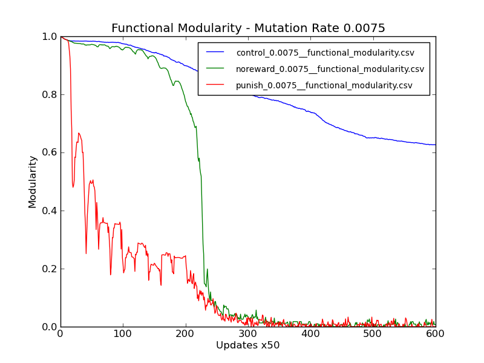
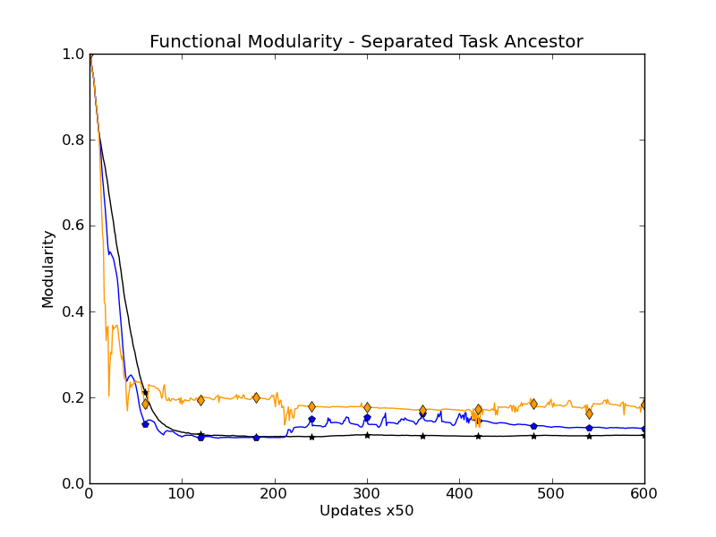
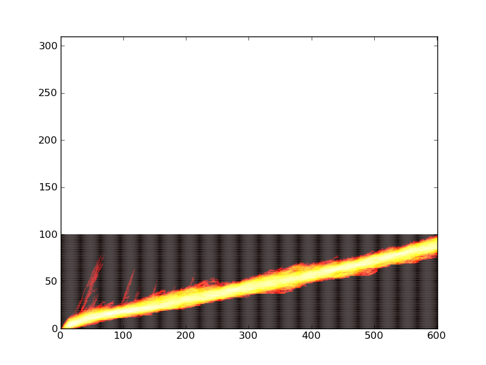
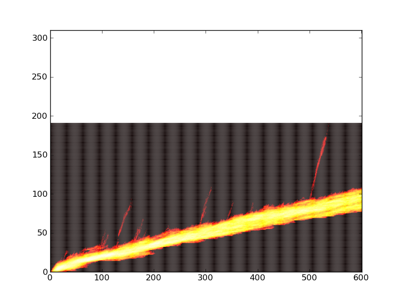
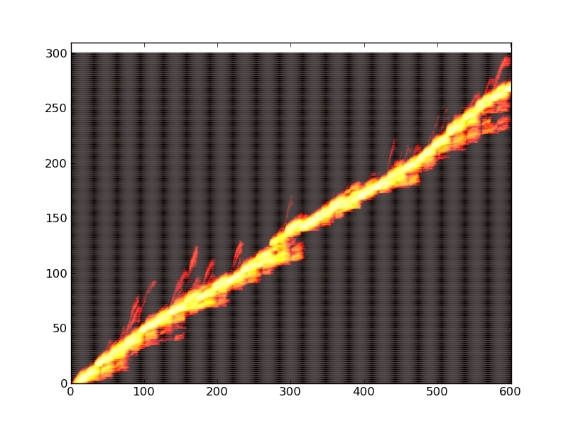
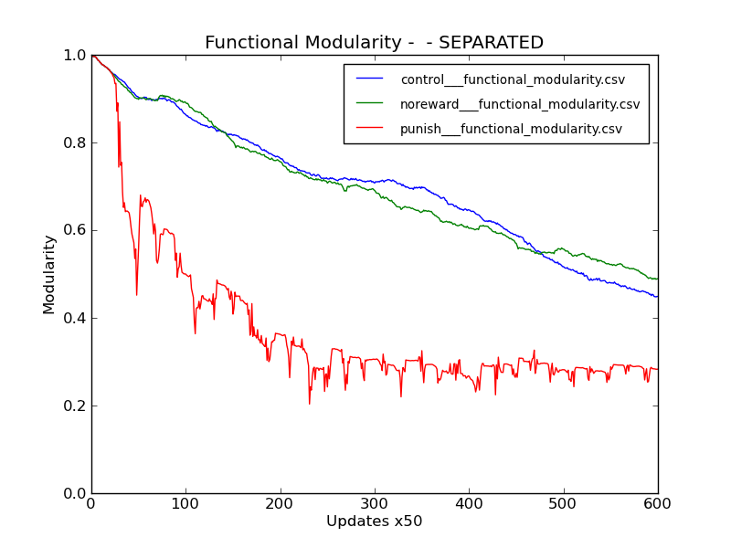
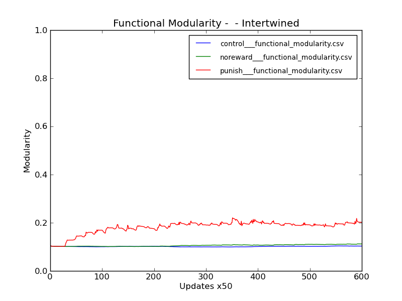

Week of March 5, 2012
Monday 3/5/12
7:06 PM
STATUS
- Yesterday and today, spent a considerable amount of time updating analyze.bash and doing the analysis on run 066 (mutation rate sweep). Two interesting points:
- Lower mutation rates show the effect way more clearly!
- The functional modularity doesn’t seem to be following the same pattern with my new evolved separated ancestor than it did with the written separated ancestor (ignore points left of 10k updates on left graph)
 
LOG
- Copying down run 067 (fixed 066 so the thing went the whole 30k updates, not just 10k)
[caninoko@dev-intel07]:[18]:[/mnt/scratch/caninoko/067]:$ mkdir populations/; for i in *_??????; do if [ ! -e $i.tar.gz ] ; then mkdir $i/data/populations/; mv $i/data/detail* $i/data/populations/; mv $i/data/populations/ ./populations/$i; tar -cvf $i.tar.gz $i ; else : ; fi; done
- Submitted job 068_Mut_Rate_0.0007 (two parts)
- Part 1: Lowest mutation rate using the evolved separated ancestor
- Part 2: four 5-run test cases – to see if we can figure out why the above two figures are so different:
- B - Low mutation rate, written separated ancestor
- C - Set high mutation rate (should be same as default), written separated ancestor
- D - Default mutation rate, written separated ancestor
- E - Default mutation rate, evolved separated ancestor
- The logic of part two is as follows
- If C and D are different, WTF BUG BUG BUG
- Else
- if (D and E) or (A and B) are different, it must be the ancestor L
- This would be very bad, and I don’t understand this at all
- Else if (D and E) and (A and B) are the same, then I go phew,
- But, if D does not look like 065 (right graph above) I get concerned that I introduced some kind of bug to the functional modularity calculation. L
- If this is the case, re-run pieces of 065 and compare
- Figured it out. The reason the figures don’t look the same is because there was a bigger distance between the XOR and EQU areas in my new ancestor organism. This caused the overlapping to take longer, since the gulf is harder to cross (there’s a lot more potential for disruptive crap).
- Wooo! Found a bug in calculate_physical_modularity.py. Had to figure out a way to patch it on all the servers that are running the job. I pulled out the host list from dist_stat detail view:
[caninoko@dev-intel07]:[145]:[~/evolution_of_modularity/068_Mut_Rate_0.0007/config/scripts]:$ thingyhosts=(amd-059 amd-085 icx-028 icx-030 icx-034 icx-043 icx-044 icx-047 icx-061 icx-075 icx-078 icx-083 icx-094 icx-095 icx-100 icx-103 icx-189 scw-001 scw-010 scw-012 scw-017 scw-018 scw-025 scw-027 scw-030 scw-034 scw-035 scw-036 scw-038 scw-061 scw-062 scw-068 scw-073 scw-076 scw-077 scw-089 scw-096 scw-099 scw-101 scw-121 scw-125)
[caninoko@dev-intel07]:[145]:[~/evolution_of_modularity/068_Mut_Rate_0.0007/config/scripts]:$ for name in ${thingyhosts[@]}; do ssh $name "for i in /mnt/local/caninoko*; do cp /mnt/scratch/caninoko/calculate_physical_modularity.py \$i/scripts/calculate_physical_modularity.py; done"; done
[caninoko@dev-intel07]:[145]:[~/evolution_of_modularity/068_Mut_Rate_0.0007/config/scripts]:$ for name in ${thingyhosts[@]}; do echo $name; ssh $name "for i in /mnt/local/caninoko*; do cat \$i/scripts/calculate_physical_modularity.py | grep daaa ; done"; done
- Futher, there were some that finished before I got to them, so I figured out how to determine which ones were affected with NANs, and re-run the analysis on only those.
[caninoko@dev-intel07]:[185]:[/mnt/scratch/caninoko/068]:$ for i in /mnt/scratch/caninoko/068/*; do if [ -e $i/data/ ] ; then for j in $i/data/*.csv.gz; do gunzip $j ; done ; for k in $i/data/*.csv ; do if [ `cat \$k | grep nan | wc -l` -gt 1 ] ; then echo $i; break ; fi ; done; fi; done | less
- above just prints out the directories
[caninoko@dev-intel07]:[188]:[/mnt/scratch/caninoko/068]:$ for i in /mnt/scratch/caninoko/068/*; do if [ -e $i/data/ ] ; then for j in $i/data/*.csv.gz; do gunzip $j ; done ; for k in $i/data/*.csv ; do if [ `cat \$k | grep nan | wc -l` -gt 1 ] ; then echo $i; cd $i; cp ~/evo*/068*/config/scripts/* scripts/; ./scripts/analyze_single_run.bash; cd ../ break ; fi ; done; fi; done | less
Tuesday 3/6/12
1:13 PM
STATUS:
- Job 068 and 068b finished. Tarring and copying down
mkdir populations/; for i in *_??????; do if [ ! -e $i.tar.gz ] ; then mkdir $i/data/populations/; mv $i/data/detail* $i/data/populations/; mv $i/data/populations/ ./populations/$i; tar -cvf $i.tar.gz $i ; else : ; fi; done
- Job 067 finished tarring up and copying down. Untarring
- Copying 50gb of data from my home directory to atlantis, now that it is back up. Yay!
LOG:
- So, where am I now? What still needs doing.
- I want to show:
- Fluctuating environments speed up adaptation.
- Functional modularity measure
- New run at lower mutation rate, using written ancestor. (SUBMITTED)
- Hostile fluctuating environment creates gene regulatory structures on the fluctuating task, while leaving the backbone task compact
- Physical modularity measure
- New run at lower mutation rate on intertwined ancestor, to clearly show the separation (SUBMITTED)
- Regulatory structures are maintained through periods of benign fluctuation
- (Is this true?)
- Physical modularity measure
- New runs at lower mutation rate, with switch-off, and longer period. (SUBMITTED)
- I suspect this isn’t true, because of how fast things come back to zero in the control runs… but maybe not…
Lab Mtg:
- distance between tasks in control – just bring it back to the shorter distance, and mention it that longer distances increase the amount of time that it takes to combine the tasks, so we just picked a distance
- add graphic (example) showing how the gap measures relate to actual organisms.
- Look at using coefficient of variation (CV)
- Measure effective mutation rate at different regions of the genomes.
- Look at ???
- Submit my phylogeny (cladeogram) script to the script repository (Luis’s)
- Look at source tree. (Git/Hg GUI)
Thoughts:
- re-generate flame graphs for new low mutation rate runs.
- Can use flame graph to show that there is a single population evolving back and forth (using the regulatory regions that evolved)
- This is related to the effective mutation rates of regions in lineages. So, if I can show that they are all evolving it back and forth, and that the outlier regions are hotspots (where the evolution is happening), then WOOHOO I HAVE PROVEN MY POINT
- Ask Charles what other stuff I need to do
11:11 PM
STATUS:
- A summary of the currently relevant jobs
- Job 066 – Mutation Rate Sweep (0.0075, 0.00375, 0.001875). Fluct env for 10k updates, then control for 20k updates (the latter phase was an error)
- Evolved Separated Ancestor
- Job 067 – Repeat of job 066, with fluct for all 30k updates
- Job 068 – Low mutation rate (0.00075) – companion to job 067
- Evolved separated ancestor
- Job 068b – Quick error check because of weird shit I was seeing. Probably redundant now that I realized what the problem was.
- Evolved separated ancestor – default mutation rate (should be 0.0075)
- Written separated ancestor – default mutation rate (should be 0.0075)
- Written separated ancestor – low mutation rate (0.00075)
- Job 069_Mutation_Rate_0.00075__Written_Ancestors
- Written separated ancestor
- 30k updates
- Job 070_Test_Modularity_Contingency__Longer_Phases__Low_Mutation_Rate
- Written separated ancestor
- Evolved intertwined ancestor
- 90k updates (3 phases)
- Running analyze.bash on job 067, since this was before I was doing this work on the HPCC. :/ This will take a while.
- Unzipped 068 and 068b. Re-running stage 3, since it looks like that failed for some reason
- Zipping up run 01 of each treatment of job 068, so I can make flamegraphs.
LOG:
- Running analyze.bash on job 068
- Generating flame graphs for job 068
rosiec@malp:/Volumes/rosiec/research/Devolab Research/evolution_of_modularity/raw_data/068/flamegraph_populations$ for i in *_??????; do python ../../../../scripts/flamegraph/flamegraph.py --ylim_max 310 $i"__flamegraph.png" 14 5 $i/detail-?.spop* $i/detail-??.spop* $i/detail-???.spop* $i/detail-????.spop* $i/detail-?????.spop*; done


- oops, I screwed up when running the analysis of 068b. I conflated the 0075 and 00075 treatments into a single directory. The new analyze.bash only works on a single treatment at a time for the aggregation stuff. I need to pull them apart, and run the aggregation stages separately (stages 4-8).
- Ok, job 068b is fully analyzed, as is job 068. Job 067’s analysis is currently running, screened on atlantis. Going to bed now.
Sunday 3/11/12
4:06 AM
STATUS:
- Last few days, have been refining my analysis scripts. There is now analysis.py, which does much of what analysis.bash did, with the benefit of better looping and error checking, and control of what tasks are done when and how. Significant improvement.
- Pulled out the graph making into its own script: “makegraphs.py”, which also lets me easily control when to include error bars, etc. Both of the above scripts live in the root directory with the data, are run from a treatment (need a better word, experiment?) sub directory.
rosiec@malp:/Volumes/rosiec/research/Devolab Research/evolution_of_modularity/raw_data/067/TREATMENT-0.001875$ python ../makegraphs.py -e phys_mod_unity_scatter phys_mod_gaps phys_mod_gapmean phys_mod_gapstd
rosiec@atlantis:~/research/Devolab Research/evolution_of_modularity/raw_data/067/TREATMENT-0.001875$ python ../analyze.py aggregate_phys_mod
- Also tweaked extract_single_column_from_csv.py to produce NANs in place of empty data points and plot_from_csv.py to ignore NANs while calculating means, so as not to weight down the data means with bogus or empty data.
- Bringing down the data from job 069. Half done.
- Started job 071 – Clone of job 069, with updated scripts, and mutation rate of .001.
2:49 PM
STATUS:
- Updated analyze.py to test for where in the analysis state we are. Could use some further blahblah, but whatever. It does what I need right now.
- Transferred and unzipped job 069, and set it analyzing. “Collect” actions are going right now in screen. When that’s done, I can run aggregate on funct and phys modularity.
8:49 PM
STATUS:
- Analyzed 069. Still not quite what I was looking for. L
- Job 071 is finished. I’m copying it down now.
- Started job 072, which is 071, with an even higher mutation rate (.002). The trick is to find a mutation rate where the control and noreward hit the modularity basement FASTER. :/
